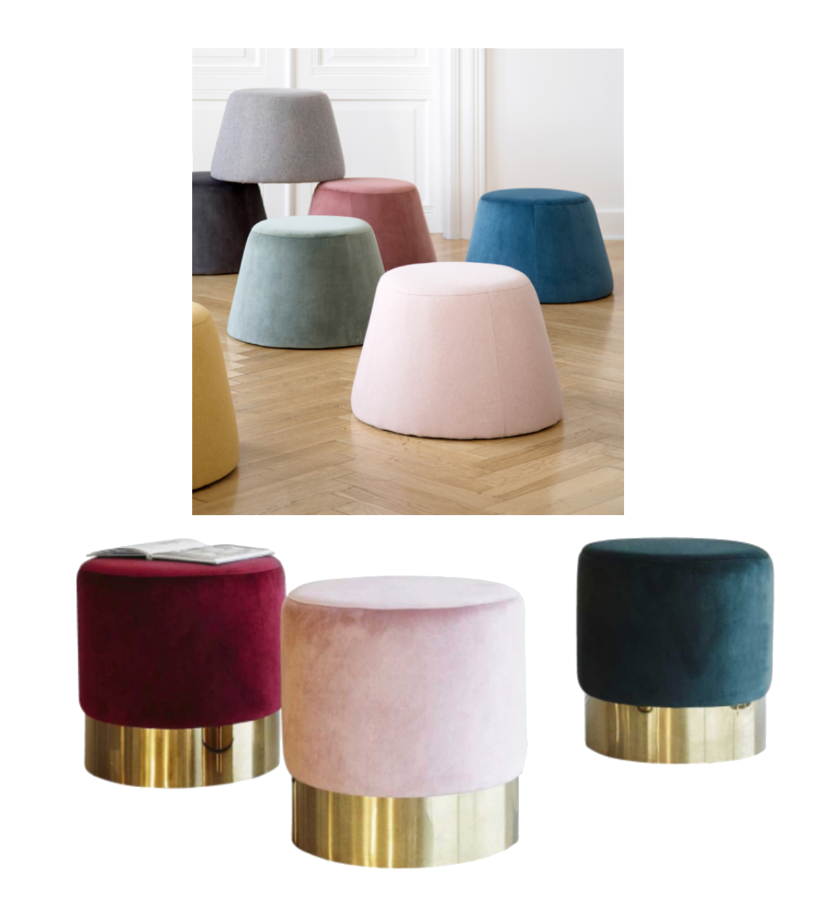
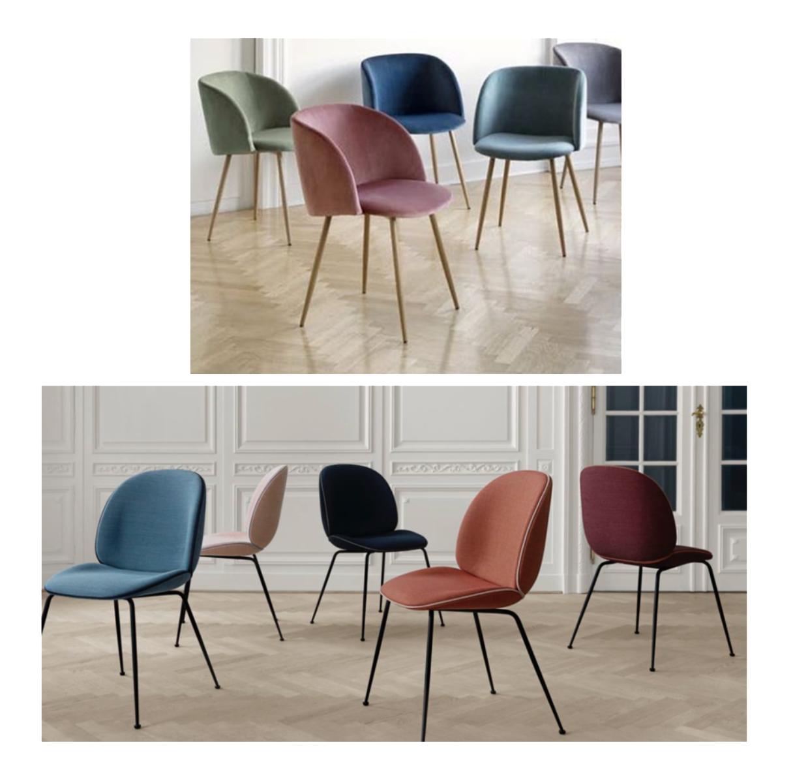

DrømmeHvem går ikke og drømmer om den perfekte bolig med alt hvad der hører til?
Selvom man er studerende kan man sagtens købe en masse fine ting, uden det vælter budgettet. Vi er så heldige, at der er blevet lavet en masse efterligninger af de dyre dyre designer møbler, som de færreste studerende og generelt unge har råd til.
Hjælp fra Søstrene Grene
Jeg har sammenlignet nogle forskellige møbler, som er meget populære lige for tiden. Et tydeligt bevis på, at man sagtens kan få den luksuriøse stil, uden at bruge hele sin pengepung op.
Jeg får rigtig meget inspiration fra Søstrene Grene. De har simpelthen sådan et fint udvalg. De følger rigtig med på moden, og formår at lave billigere løsninger på de dyre designer møbler.
Her har søstrene grene lavet en super flot og lækker puf, som man kan få i mange forskellige farver. Jeg har selv overvejet at købe den, da jeg har helt vildt med den rosa farvet. Jeg er ret sikker på de har fået inspiration fra mærket Velvet Stool, dog koster denne puf 15.000 kr. hvor de fine puffer fra søstrene grene koster blot 219 kr.

Den næste sammenligning er på 2 stole.
Igen er den ene som er den billige fra Søstrene Grene. Den koster 398 kr, og fåes i mange forskellige farver. Den er super fin, og meget enkel. Stolen er i velour, som er et stort hit inden for bolig markedet lige i øjeblikket. Den anden stol er fra Gubi, som Søstrene Grene har fået inspiration fra. Den koster dog 10.495 kr. som er en helt helt anden pris.

Gå ind og tjek
Søstrene Grenes hjemmeside ud, og får en masse inspiration!
XOXO Malou Jeppson